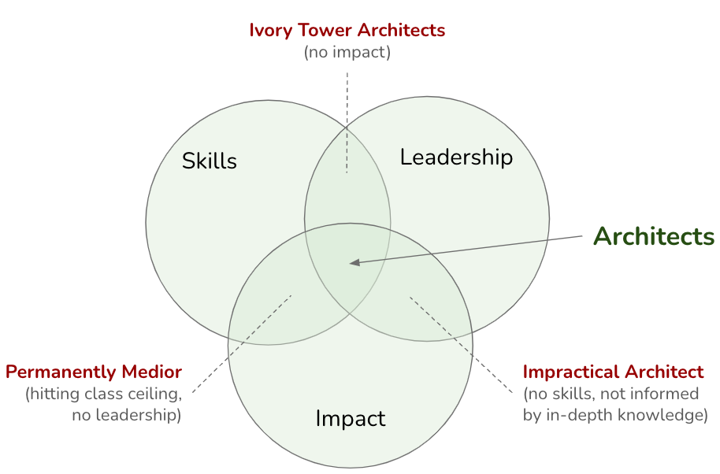

Architects as Superglue
KEY POINTS:
- Architects in IT organizations should develop as “superglue,” people who hold architecture, technical details, business needs, and people together across a large organization or complex projects.
- Architects need to be technically strong. But their unique strengths should stem from being able to relate, or glue, technical issues with business and broader issues.
- Architects should stand on three legs: Skills, Impact, Leadership.
In my view, architects in IT organizations should develop as “superglue.” I borrow the “superglue” view from Adam Bar-Niv and Amir Shenhav from Intel. They pointed out that instead of the superhero, we need “superglue” architects - the people who hold architecture, technical details, business needs, and people together across large organizations or complex projects. More recently, Tanya Reilly presented a similar view concerning software engineering positions.
The superglue characteristics mean serving as the organizational connective tissue, linking the “business wheelhouse” and the “engine room.” Architects, of course, need to be technically strong. But their unique strengths should stem from being able to relate, or glue, technical issues with business and broader issues.
From discussions I’ve had with our technology leaders, engineers, and architects, the picture below has crystallized as a representation of the “superglue” metaphor for architects (Figure 1).
 Figure 1: Architects serve as a superglue, connecting development teams with business stakeholders while linking teams with the internal communities and the external world.
Figure 1: Architects serve as a superglue, connecting development teams with business stakeholders while linking teams with the internal communities and the external world.
Architects must have good relationships with developer teams, local business stakeholders, and functions. Simultaneously, such a person needs to be well-connected with broader internal communities. External visibility is essential for architects, who can bring ideas from outside into the organization and promote the organization to the outside world.
Superglue Abilities
Setting the architects’ goals to be “superglue” also requires some thought on developing architects as a superglue. Borrowing from Gregor Hohpe’s view on architect development from his book Software Architecture Elevator, I share the view that our architects should stand on three legs:
- Skills
- Impact
- leadership
 Figure 2: Architect Profile: Skills + Impact + Leadership.
Figure 2: Architect Profile: Skills + Impact + Leadership.
Skills
Architects have to have proper skill sets. By skills, I mean possessing knowledge and the ability to apply relevant knowledge in practice. These skills should include both technical (e.g., cloud architecture or Kubernetes technology) as well as communication and influence skills.
A typical skillset of an architects includes:
- Hard (technical) skills, including extensive knowledge of for both new technology and legacy technology stacks,
- Soft skills, and
- Business Domain knowledge.
The section Skills provides more details.
Impact
Impact should be measured as a benefit for the business. Architects need to ensure that what they are doing profits the business:
- They identify, tackle and deliver on strategic problems at the organization and area level.
- They have a track record of deep and/or broad impact on a product or technology area.
- They deliver solutions that few others can, either by your heavy lifting or the ability to orchestrate large group efforts.
Architects need to get out into the world and make an impact. Architects that do not make an impact do not have a place in a for-profit business.
Examples of such impact may include:
- Aligning business, product, technology and organizatinal strategies (see this section for more details),
- Process optimizations and improvements, with real measurable impact on work of an organization,
- Cost optimizations of systems, based on data informed decisions,
- Developing pragmatic technology strategies, helping business reach goals in a sustainable way,
- Driving delivery of products, supporting teams to increase quality and speed of delivery,
- Supporting business innovation, bringing new ideas in a pragmatic way aligned with business strategy and goals.
The section Impact provides more details. In my view, architects in IT organizations should develop as “superglue.”
Leadership
Lleadership acknowledges that experienced architects should do more than make architecture:
- They are a role model for others in the company on both the technical and cultural front.
- Their technical influence may extend beyond you organization and reach the industry at large.
- They lead efforts that solve important problems at the engineering area level.
- They may contribute to the broader technical community through tech talks, education, publications, open source projects, etc.
- They raise the bar of the engineering culture across the company.
Mentoring junior architects is the most crucial aspect of senior architects’ leadership. Feedback cycles in (software) architecture are inherently slow. Mentoring can save new architects many years of learning by doing and making mistakes. The People Pillar should create spaces for such coaching and collaborations.
The section Leadership provides more details.
Balanced Development
Architects need to have a minimal “length” of all of these “legs” to be successful (Figure 3). For instance, having skills and impact without leadership frequently leads to hitting a glass ceiling. Such architects plateau at an intermediate level and cannot lead the company to innovative or transformative solutions. Leadership without impact lacks foundation and may signal that you have become an ivory tower architect with a weak relation to reality. And having impact and leadership qualities but no skills leads to impractical decisions not informed by in-depth knowledge.
 Figure 3: Architects need to have a minimal “length” of all of these “legs” to be successful.
Being Architect ← Being Architect |
Being Architect Skills → |